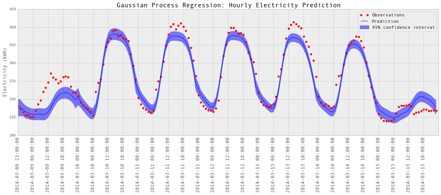
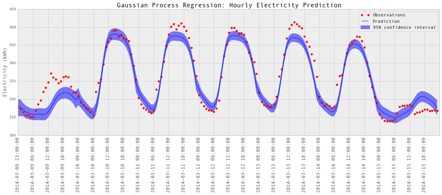

Prediction of Buildings Energy Consumption
Bin Yan, Constant Wette and Wen Xie

 



Motivation
The issue of energy performance of buildings is of great concern to building owners nowadays as it translates to cost. According to the U.S. Department of Energy, buildings consume about 40% of all energy used in the United States. Some states and municipalities have adopted energy savings targets for buildings in an effort to reduce air pollution and climate change in urban areas as well as regionally and globally. In this project, we will apply machine learning methods to predict energy demand of buildings based on time, weather and historical data. This type of modeling is frequently applied to energy demand prediction for smart grid technologies and energy saving verification for building commissioning. In the past, Neural Networks were most commonly used for these tasks. We would like to apply more machine learning methods to such prediction.
Screencast
.....
Data Collection
.....
Exploratory Data Analysis
We've .....
Machine learning methods
Gaussian Process Regression
......
Visualization
...